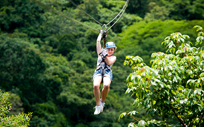

Skip to Main Content
Travel
1. Rome
2. 
3. 
4. colosseum-rome.gif
5. colosseum-rome.jpg
6. Geographical Location: Europe
7. Rome is one of the oldest metropolitan areas in the world. With a history dating back to 700 BC with the birth of the Roman Empire, the city has maintained its status as a cultural and historical hub of Europe. The city is peppered with ancient monuments, statues, and piazzas from different eras of history. The most famous location, the Colosseum, is touted as one of the seven modern wonders of the world. Rome houses several world famous museums, such as the Borghese and the Vatican Museum. It is also the only city in the world to encompass a recognized country, Vatican City.
8. Rome is also a great location for food, wine, and leisure. At the heart of Italy, Rome is a central gathering place for a diverse array of Italian cuisine; Neapolitan Pizza from the south, Tuscan wine, and truffle from the north. Rome’s most famous dish is carbonara. Beyond the food, Rome has a vibrant nightlife. The Trastevere neighborhood has plenty of bars and clubs for patrons and, just over the river, Centro’s shopping district is always bustling.
9. Photo Gallery
10. colosseum-rome.gif
11. The Roman Colosseum at Night
12. Roman Colosseum Glittering
13. colosseum-rome.jpg
14. The Roman Colosseum in the Daytime
15. A cloudy day at the colsseum
16. trevi-fountain-rome.jpg
17. A decorated marble fountain with several roman statues dancing.
18. a water fountain
19. Victor-emmanuel-rome.jpg
20. An ornate marble building with bronze statues of angels and chariots, and the Italian flag on either side.
21. Frank Pelosi
1. Chiangmi, Thailand
2. 
3. 
4. chiangmaigif.gif
5. chiangmai.jpg
6. Geographical Location: Asia
7. Chiang Mai, nestled in the lush hills of northern Thailand, is a city that captivates with its unique blend of cultural richness and natural beauty. Situated approximately 700 kilometers north of Bangkok, Chiang Mai is the largest city in the region and serves as the capital of the province of the same name. Its geographical location is nothing short of enchanting, surrounded by forested mountains and picturesque landscapes. This charming city, often referred to as the "Rose of the North," offers visitors a delightful escape from the bustling urban life, inviting them to explore a realm where tradition meets modernity amidst a backdrop of stunning scenery.
8. The heart of Chiang Mai beats with a rich history that dates back over 700 years. Founded in 1296, the city was originally the capital of the ancient Lanna Kingdom. Today, remnants of its storied past are scattered throughout the city, from the ancient temples that dot the landscape to the preserved city walls and moats that harken back to a bygone era. Among the city's treasures is the revered Wat Phra Singh, a 14th-century temple known for its intricate architecture and revered Buddha image. Chiang Mai's historical sites provide a captivating glimpse into its heritage, making it a destination that seamlessly weaves together the past and present for visitors to explore and appreciate.
9. Photo Gallery
10. chiangmai1.jpg
11. colorful hot balloons in the heart of Chiang Mai
12. You can see hot balloons in Chiang Mai as well.
13. chiangmai2.jpg
14. several elephants and smiley volunteers in the forest
15. You can see cute elephants in Chiang Mai! Isn’t that fun?!
16. chiangmai3
17. ancient temple of Chiang Mai
18. There are so many beautiful temples in Chiang Mai.
19. chiangmai4
20. several monks walk by the street
21. Be respectful to the monks
22. Cindy Ye
1. Monteverde, Costa Rica
2. 
3. 
4. Monteverde.gif
5. Monteverde_skyline.jpeg
6. Geographical Location: South America
7. Monteverde, Costa Rica is situated 4,662 feet above sea level. Monteverde’s famed cloud forests are the byproduct of fog (a thick, low-hanging cloud) tangling amongst the leaves and branches of the forest canopy. Trails and hanging bridges offer a close-up view of the diverse variety of animals and plants living in the forest.
8. One of the main tourist locations in Monteverde is the town of Santa Elena, which is not only home to a variety of restaurants with delicious food, but a serpentarium as well. You can enjoy hiking, ziplining, and observing the native wildlife while staying in Monteverde. It’s a truly beautiful place.
9. Photo Gallery
10. Monteverde_cloud_forest.jpeg
11. Clouds rolling through a line of trees.
12. You can see hot balloons in Chiang Mai as well.
13. You can hike trails and zipline through the Monteverde cloud forests.
14. Monteverde_hanging_bridges.jpeg
15. An image of a bridge hanging above the cloud forest canopy in Monteverde.
16. Hanging bridges over the cloud forests allow for a birds-eye view.
17. Monteverde_hummingbirds.jpeg
18. A hummingbird with green feathers drinking from a pink and orange flower.
19. You can visit hummingbirds at Monteverde’s Selvatura Park’s hummingbird garden, which exhibits over 14 different species of hummingbird.
20. Monteverde_el_tigre_waterfalls.jpeg
21. A person in red standing in front of one of El Tigre’s four waterfalls.
22. El Tigre Waterfalls is made up of four falls, which are connected by trails and hanging bridges.
23. Kay Malan